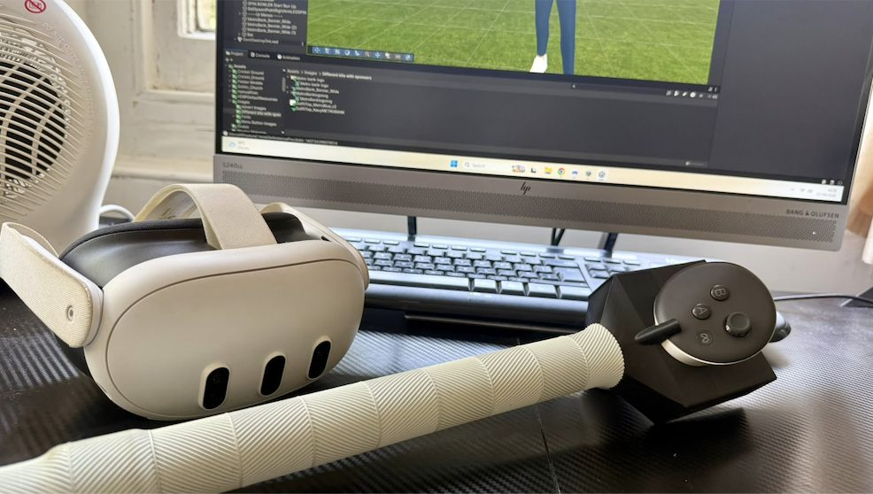
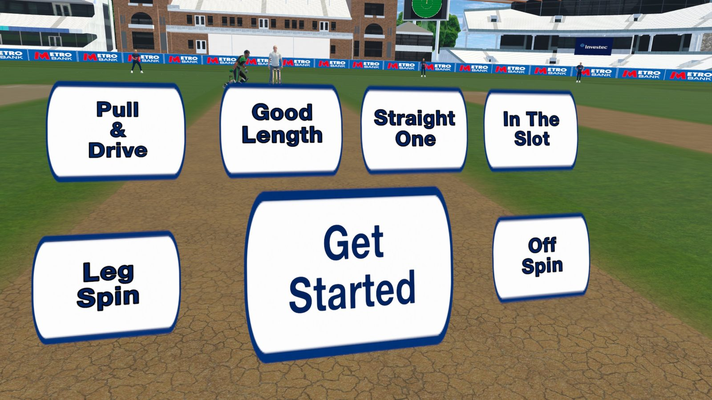
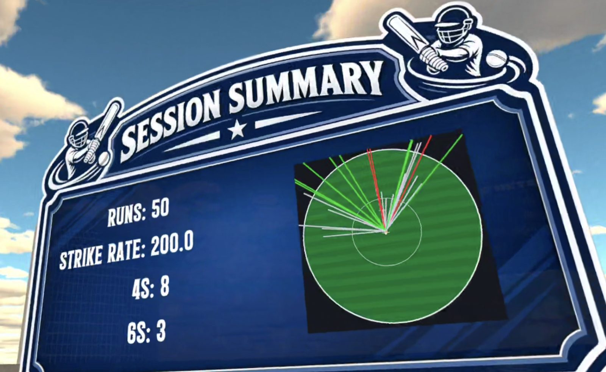

An immersive, high-repetition VR cricket training ecosystem for grassroots cricket, schools and local clubs.
See it in action
What it is
Put on a Meta Quest headset, clip on the bat-handle accessory, and face high-quality bowling as often as you like — no bowler, no booking, no weather.


Train with purpose
Work through structured drills — good length, pull and drive, spin and more — with instant feedback on every shot. Valuable from first-timers through to experienced players.
Measure everything
Every session is tracked — balls faced, runs, strike rate, a broadcast-style wagon wheel and more. Soon you'll see it all in one place through your player portal.

Common questions